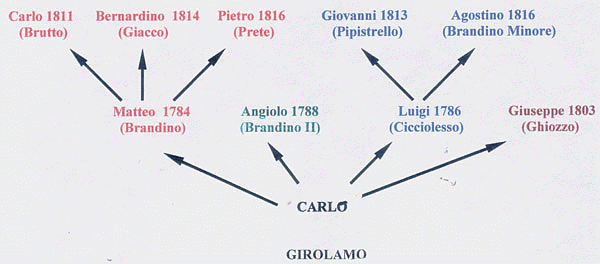

|
- PROCESSI E FATTI CURIOSI CHE RIGUARDANO I FANTINI -
|
|
Luigi Brandani detto Cicciolesso si sposò due volte ed entrambe con donne imperentate strettamente con fantini del Palio.
La prima fu Aurora, figlia di Giuseppe Brecchi, detto Brecchino il 7 febbraio 1813 in Val di Pugna. Esattamente 9 mesi più tardi, il 7 novembre, nacque il primogenito Giovanni, in seguito conosciuto come "Pipistrello".   Il matrimonio non durò a lungo, infatti il 25 novembre 1820 Aurora morì per le conseguenze relative al parto del figlio Fortunato.  Come si intende da una testimonianza resa in processo avvenuto a seguito di un litigio, (cfr.) Luigi si risposò, questa volta con Margherita, sorella di Giuseppe Straccali, detto Beppaccio. Pertanto Cicciolesso era genero di Brecchino e pure cognato di Beppaccio. cognato di Bianchi Mugnaio (Giuseppe Bianchi), cognato di Beppaccio (Giuseppe Straccali); suocero di Campanino (Francesco Bianchini); nonno di Piccolo Campanino (Leopoldo Bianchini); genero di Brecchino (Giuseppe Brecchi); padre di Pipistrello (Giovanni Brandani) e Brandino Minore (Agostino Brandani); fratello di Brandino (Matteo Brandani), Brandino II (Angiolo Brandani) e Ghiozzo (Giuseppe Brandani)   Giuseppe Bianchi sposò Annunziata Brandani sorella di Luigi. Giuseppe Straccali era il fratello della moglie di Luigi Brandani. Francesco Bianchini sposò Faustina Brandani, figlia di Luigi. Giuseppe Brecchi era il padre di Aurora, moglie di Luigi Brandani. |